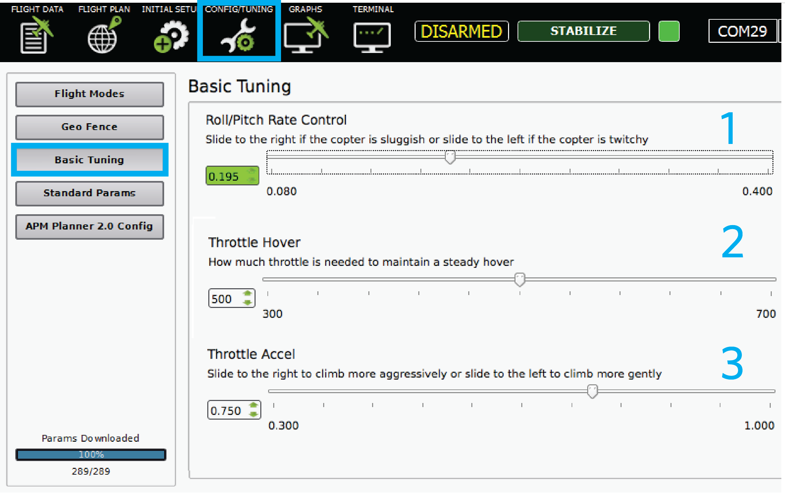
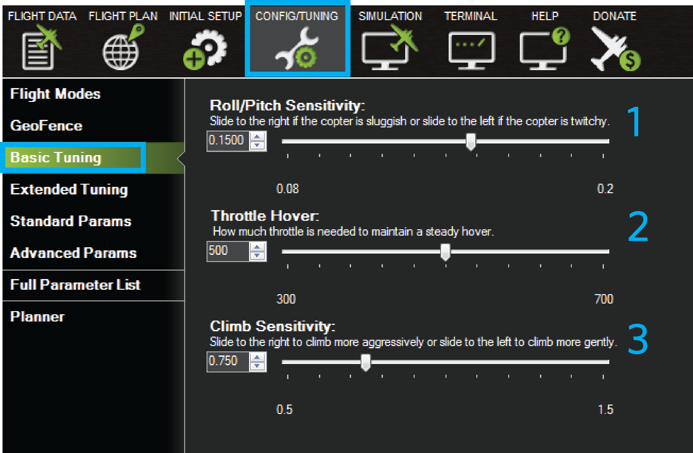

Basic Tuning¶
Note
this page superseded and is now ARCHIVED
This topic covers basic Roll and pitch and throttle tuning.
Overview¶
After your first flight, you may notice that you copter doesn’t respond to control inputs the way you want it to or you may have trouble maintaining control of your copter. If you are familiar with PID controllers, check out the advanced tuning guide here. If you are an experienced operator, try out the autotune feature. This page will cover the basic tuning section of Mission Planner and APM Planner that simplified the complex tuning process into a few simple sliders. This is the best tuning method for new operators.
Roll and pitch tuning¶
Tuning is easiest at the field using a telemetry radio. Perform an initial flight with the following questions in mind:
How does the copter respond to roll and pitch? Is the response more sluggish or twitchy than you want?
When the copter is hover, what level is the throttle set at? Does it hover at the middle position of the stick or is it above or below the center position?
When raising the throttle, what rate does the copter accelerate at? Does it gain altitude more slowly or more quickly than you want?
Connect the telemetry radio ground module to your ground station computer and open either Mission Planner or APM Planner. Select the correct COM port and select Connect. You should see live data on the Flight Data screen. To begin tuning, select Config/Tuning and Basic Tuning.
Start with the Roll/Pitch slider at the top of the page. If you observed that your copter was too twitchy in response to roll and pitch controls, move the slider one tick mark to the left, or, if you observed that your copter was too sluggish, move the slider one tick mark to the right. Repeat your flight to determine if the change was beneficial. Repeat the process until you are satisfied with the way your copter responds to roll and pitch.
 {kind=link}
{kind=link}
Throttle tuning¶
The bottom two sliders allows you to tune the throttle control. Adjust the slider marked Throttle Hover until the copter hovers at the throttle stick’s middle position. If the copter hovers with the throttle stick above middle position, move the slider to the left by one tick-mark until it hovers at mid-stick, testing as you go. If the copter hovers with the throttle stick below middle position, move the slider to the right by single tick-mark increments until it does. Make sure to test each set of tuning settings as you go.
Move the slider marked Throttle Accel or Climb Sensitivity to the right to have the copter gain altitude more aggressively or to the left to have the copter gain altitude more gently. Test each increment after setting to evaluate the tune.